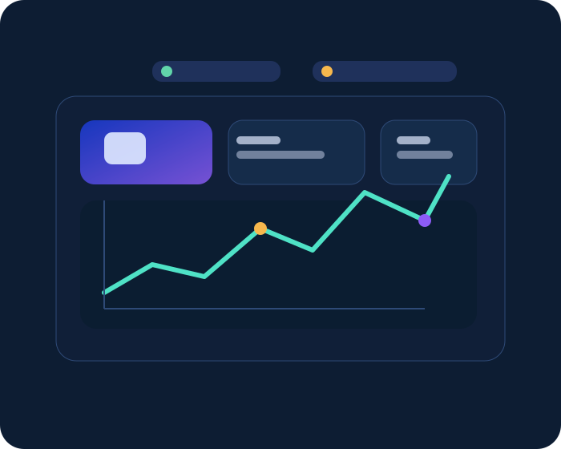

Qué es BI
Business Intelligence reúne procesos, herramientas y análisis para convertir datos en información útil para la organización.
Descubre cómo los datos se convierten en información útil para comprender problemas, identificar oportunidades y tomar mejores decisiones.

Business Intelligence reúne procesos, herramientas y análisis para convertir datos en información útil para la organización.
Ayuda a monitorear rendimiento, detectar oportunidades y evaluar riesgos en ventas, operaciones, marketing y estrategia.
Los datos son hechos sin contexto; la información los organiza; el conocimiento permite decidir con criterio.
Reducir la intuición aislada y usar evidencia, contexto y métricas relevantes para priorizar acciones.
Registros, transacciones, cifras y eventos sin interpretación.
Datos organizados y analizados para responder una pregunta.
Comprensión aplicada que orienta decisiones de negocio.
Un comercio observa una caída del 14% en ventas mensuales. Revisa dashboard de ventas por canal, producto y sucursal. Descubre que una categoría pierde demanda en una zona específica y decide lanzar una campaña digital con oferta por segmento.
Reporte, KPI, indicadores y seguimiento de desempeño.
Diagnóstico y análisis para comprender por qué ocurre algo.
Modelos para estimar escenarios futuros y probabilidades.
Se obtienen ventas desde bases de datos, CSV, hojas de cálculo y APIs. Ejemplo: extracción de registros de pedidos con fecha, cliente, producto y monto.
Se limpian nombres, eliminan duplicados, tratan nulos, normalizan formatos, convierten tipos y calculan indicadores como ticket promedio y margen.
Los datos limpios se cargan en un almacén analítico o base de datos para alimentar dashboards y reportes operativos.
| Pedido | Producto | Fecha | Monto | Estado |
|---|---|---|---|---|
| 1001 | Mouse Wireless | 2025-10-01 | $49.99 | OK |
| 1002 | Mouse Wireless | 2025-10-01 | $49.99 | Duplicado |
| 1003 | Teclado Mecánico | 2025/10/02 | 89.90 | OK |
ETL transforma datos crudos en un dataset limpio; ETL y ELT cumplen objetivos parecidos, pero ELT carga primero y transforma después cuando el destino analítico lo permite.
Una empresa comercial detecta una caída en ventas durante dos meses consecutivos.
Ventas por región, canal, producto, categoría y margen de cada pedido.
Se extrae, limpia y normaliza la información para preparar métricas comparables.
Todas las cifras de este ejemplo son datos simulados y solo sirven para ilustrar el proceso de análisis.